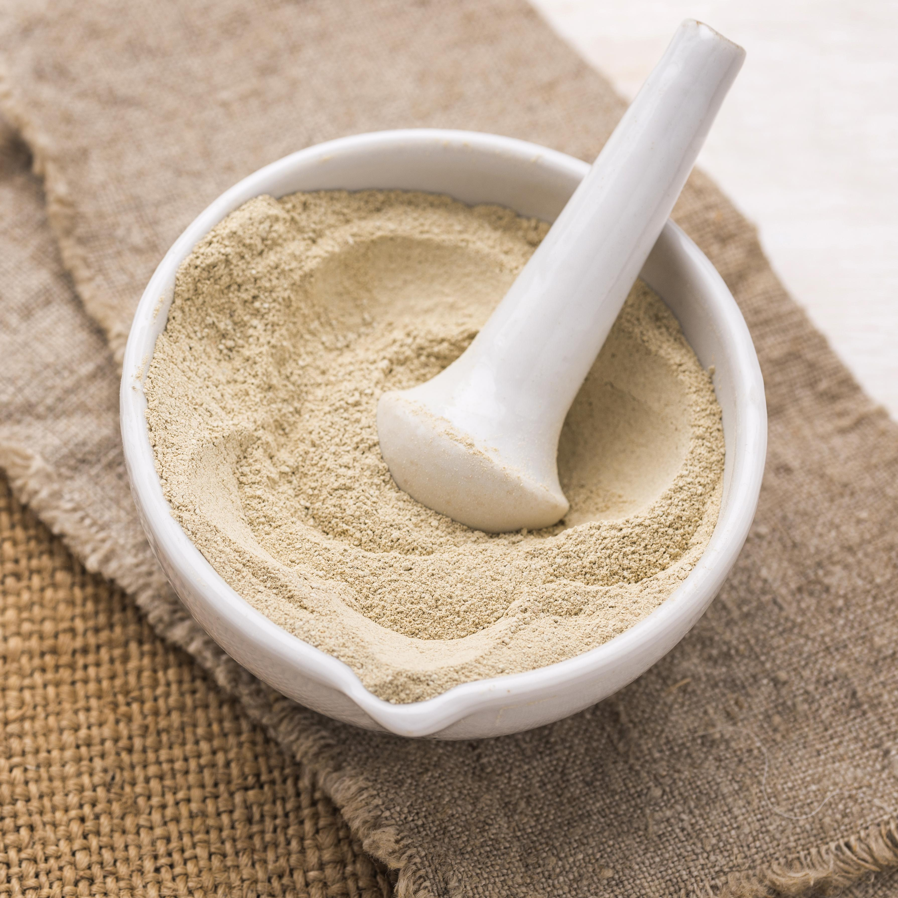

LEHCE FRESCA
Primer ingrediente de la quajada

CUAJO EN POLVO
Segundo ingrediente de la quajada

SAL
Tercer ingrediente de de la cuajada
La cuajada es un delicioso y tradicional producto lácteo que ha sido disfrutado durante siglos en diversas culturas alrededor del mundo. Este manjar se obtiene mediante la coagulación de la leche, un proceso que transforma la leche líquida en una mezcla suave y ligeramente firme, conocida por su sabor fresco y textura cremosa. La cuajada es apreciada no solo por su simplicidad y sabor, sino también por su versatilidad en la cocina y sus beneficios nutricionales.
Primer ingrediente de la quajada
Segundo ingrediente de la quajada
Tercer ingrediente de de la cuajada
Calentado de la Leche: Cubre la cacerola con una tapa o un paño limpio y deja reposar la leche en un lugar cálido durante aproximadamente 1-2 horas. Durante este tiempo, la leche comenzará a coagularse y separarse en cuajada y suero..
Control de la Temperatura:: Los frutos pueden ser cosechados manualmente o mediante maquinaria especializada, dependiendo del tipo de fruta y la escala de producción.
Disolver el Cuajo:Si estás usando cuajo en polvo o en tableta, disuélvelo en una pequeña cantidad de agua tibia (no caliente). Si es cuajo líquido, puedes añadirlo directamente.
Incorporar el Cuajo: Agrega el cuajo disuelto a la leche tibia y mezcla bien con una cuchara de madera o una espátula. Asegúrate de que el cuajo se distribuya uniformemente por toda la leche..
Dejar Reposar: : Cubre la cacerola con una tapa o un paño limpio y deja reposar la leche en un lugar cálido durante aproximadamente 1-2 horas. Durante este tiempo, la leche comenzará a coagularse y separarse en cuajada y suero.
Verificación: Después del tiempo de reposo, verifica la coagulación. La cuajada debe tener una consistencia firme, similar a un flan, y debe haberse separado del suero (un líquido amarillo claro).
Cortar la Cuajada:Utiliza un cuchillo largo y limpio para cortar la cuajada en cubos de aproximadamente 1-2 cm. Realiza cortes verticales y horizontales, formando una cuadrícula. Esto ayuda a liberar más suero y a darle una textura uniforme a la cuajada.
Salado (Opcional): Si deseas añadir sal, hazlo en este momento. Espolvorea una pizca de sal sobre la cuajada y mezcla suavemente.
Moldeado: Transfiere la cuajada a moldes o recipientes donde quieras que tome forma. Si usas una gasa, puedes envolver la cuajada y colgarla para que termine de drenar el suero y tome una forma compacta.
Dejar Reposar:Deja reposar la cuajada a temperatura ambiente durante una o dos horas para que termine de drenar cualquier exceso de suero.
Refrigerar: Coloca la cuajada en el refrigerador y déjala enfriar durante al menos 2-4 horas antes de consumir. Esto ayuda a que se asiente y tome una textura más firme.
Nuestra prioridad es la calidad. Ofrecemos productos de alta gama.
Garantizamos entregas rápidas para que recibas tus pedidos a tiempo.
Estamos disponibles todo el día para ayudarte con cualquier consulta.